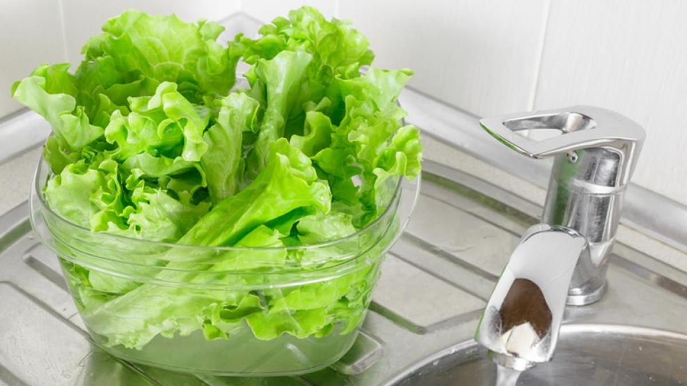
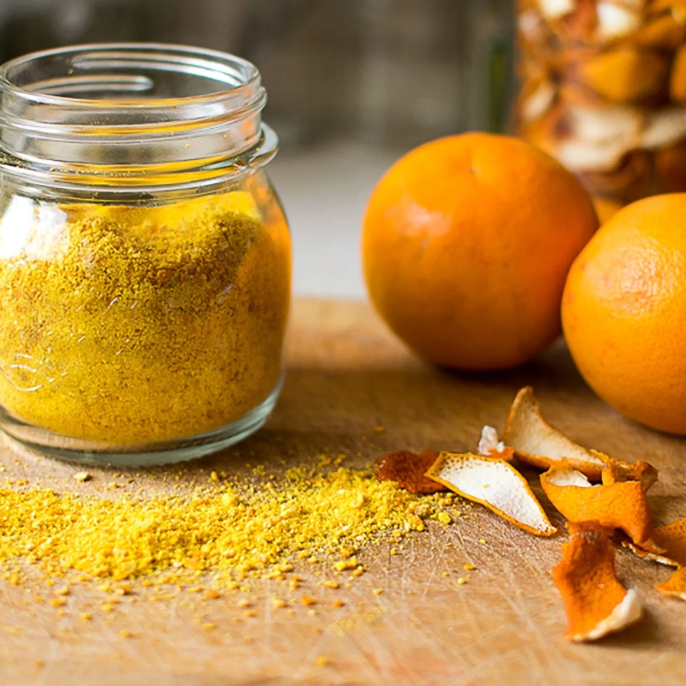

TIPS
¡Les traigo las mejores soliciones a problemas cotidianos en la cocina!

¡Lechuga por más tiempo!
Con este tip alargas la vida útil de la lechuga manteniéndose siempre fresca
- Lavar la lechuga 3 veces, en el primer lavado con unas gotas de lavandina y los 2 restantes con vinagre de alcohol.
- Dejar en remojo unos minutos y luego centrifugar, secar con un paño lo que quede de humedad.
- Sobre un lienzo poner las hojas y encima papel absorbente a modo de capas.
- luego envolver y poner en un recipiente para que quede en la heladera.

¡No tires más las cascaras!
Vamos a aprovechar al 100% las cascaras de naranjas para muchos usos
- Pelar la fruta sacando la piel sin la parte blanca que es muy amarga.
- Poner a secar, si desea hacer rápido se puede poner en un horno con temperatura muy baja de menos de 180 grados.
- Una vez seca se coloca en una licuadora o procesadora hasta que quede muy molido todo.
- Pasar por un colador y separar el polvillo de lo más grande.
- El polvillo se utiliza para cocinar en preparaciones dulces o saladas, como ser tortas sazón o aderezos. La parte más gruesa se utiliza en infusiones, fabricación de esencias, repelente para las plantas.